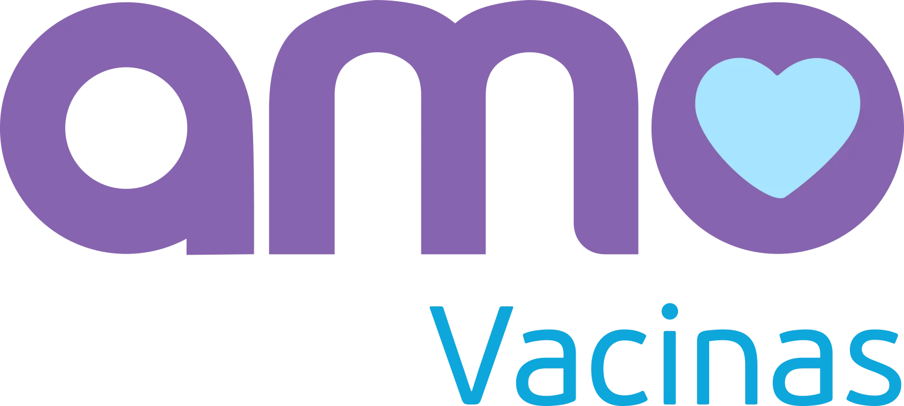
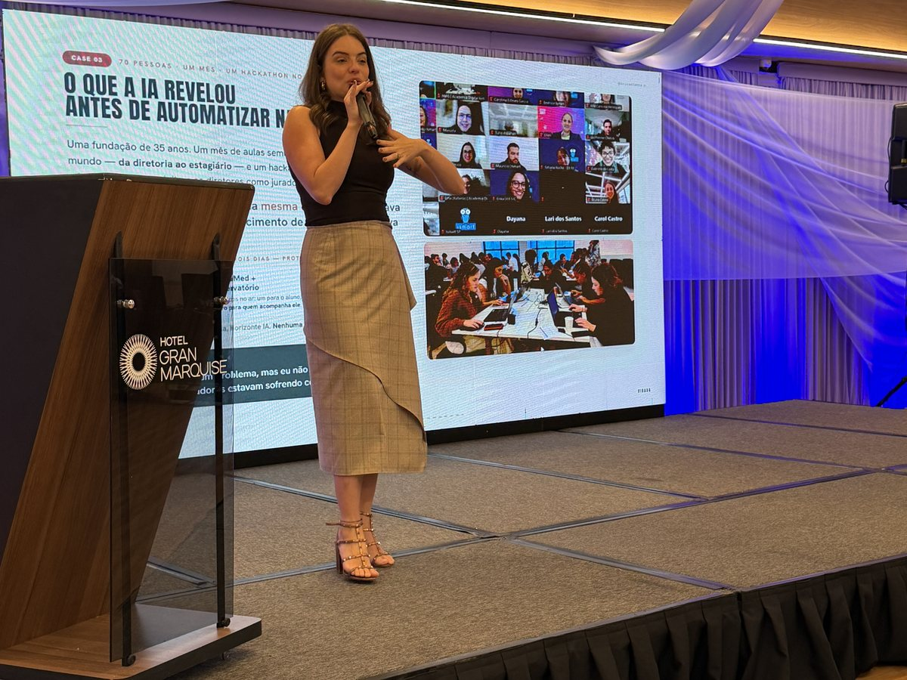

Grupo Stringhetta
Empresa familiar, dono na operação: o fechamento de caixa que levava dias passou a sair em minutos, com painel.

Um dia inteiro de imersão presencial na Amo Vacinas, em Santos, com você, a Vitória e o Davi. Ao fim do dia, a leitura do caixa e os relatórios comerciais passam a nascer dentro de casa, no tempo em que você precisa deles.
O dado que hoje volta para você em forma de DRE e de fluxo de caixa sai do Vacina SIS e do extrato do seu banco, que já são seus. O Conta Azul também já está contratado, com a conexão automática às contas pronta para ser usada. No comercial acontece um movimento parecido: a resposta existe, ela só precisa passar por exportação, Excel e tabela dinâmica antes de chegar até você.
Não é projeção nossa, é a sua despesa fixa de hoje colocada ao lado do valor da imersão. Foi a conta que você fez em voz alta na conversa, e ela continua de pé no papel.
Serviços externos de DRE e de fluxo de caixa. Despesa fixa, independente do que acontece na operação.
O que essa mesma despesa soma em doze meses, sem contar as horas do time gerando relatório manualmente.
Uma vez só, sem mensalidade. Menos do que dois meses da despesa atual.
Encerrar o serviço financeiro externo é uma decisão sua, e não uma recomendação automática nossa. A DRE tem uma parte de alinhamento contábil (categorização de despesa, plano de contas, o que entra como royalty e o que é despesa operacional) que continua sendo conversa com a sua contabilidade. O que a imersão entrega é a autonomia sobre o número: você e o time montando, cruzando e enxergando, sem depender de terceiro para saber onde está o caixa. Onde exatamente cortar, você decide depois de ver funcionando.
A pesquisa de nivelamento acontece antes, respondida individualmente por você, pela Vitória e pelo Davi. É ela que indica o nível de cada um e a dificuldade concreta de cada um, para que o dia não comece do zero.
Das 9h às 18h, na sua unidade em Santos. Como são três pessoas, a parte expositiva fica curta e todo mundo participa junto, sem separar o dia em turmas. O restante é construção, com o Vacina SIS, o Conta Azul e o extrato abertos na tela.
A única parte expositiva, e mais aprofundada do que a palestra de Fortaleza. Não é aula de ferramenta: é o raciocínio por trás dela, porque quem entende isso automatiza qualquer processo depois, inclusive os que ainda vão aparecer.
Sentamos juntos e mapeamos o processo como ele acontece hoje: onde mora a informação, de que sistema ela é puxada, onde se clica, o que é feito com o arquivo depois. Só então o processo é entregue à IA. A prioridade é a sua, e o financeiro entra primeiro.
Sai com automação rodando no próprio computador. Essa é a diferença entre a palestra de Fortaleza e o dia que está nesta proposta: lá o objetivo era mostrar o que é possível, aqui é construir. É viável cobrir pelo menos um processo por pessoa, e normalmente sai mais, porque a lógica do segundo processo é a mesma do primeiro. É nesse ponto que o time começa a andar sozinho.
Algumas ideias do que pode ser construído no encontro. Não é escopo fechado: você define as prioridades, e o financeiro já entrou como a primeira delas.
Você puxa o extrato dos bancos e o relatório do Vacina SIS, entrega ao Claude, e recebe de volta a conciliação, a planilha e o painel com o que você quer enxergar. É o mesmo caminho que, em outro cliente, encurtou um fechamento de caixa de dias para minutos.
Sai fazendo: o número no momento em que você precisa deleA força dele é a conexão automática com as contas, via Open Finance. Organizamos juntos a provisão de receitas e despesas, o cadastro de fornecedor e a categorização, e ele passa a ser a fonte da informação, em vez de um sistema atualizado por terceiros e que você nunca abre.
Sai fazendo: uma fonte só, e ela é suaCom o histórico organizado e as provisões no lugar, a leitura deixa de ser uma foto do passado e passa a projetar. "Qual é a minha posição de caixa prevista para o dia 21?" vira uma pergunta com resposta, acompanhada da lista do que pesa naquela janela.
Sai fazendo: decisão com tempo de reagirVocê pergunta, e a resposta demora porque alguém precisa exportar, jogar na planilha e montar tabela dinâmica. Construímos a rotina que percorre esse caminho inteiro e devolve o relatório pronto, para o time voltar a atender cliente em vez de editar planilha.
Sai fazendo: resposta na hora, sem sair do atendimentoLegenda, capa, objeção de preço, programa de indicações. O que você construiu conversando com o ChatGPT vira skill no Claude, com a identidade da Amo Vacinas dentro. A diferença é que a skill não esquece, e melhora a cada correção que você faz nela.
Sai fazendo: a inteligência sai da conversa e vira processoO que o time está tocando, o que já fechou, o que está parado e o número do dia, em uma página só. É o tipo de painel que, na maior parte dos casos, quem constrói é a própria pessoa da operação, no dia seguinte à imersão, e não nós.
Sai fazendo: visibilidade sem precisar cobrarÉ possível pedir ao Claude que leia o WhatsApp Web, identifique as mensagens não respondidas e sugira a resposta de cada uma com o repertório de vocês. Isso não acontece por integração com a Meta, que não libera, e sim pelo plugin do Chrome, no qual ele age como uma pessoa dentro do navegador, com você aprovando antes de qualquer envio. Sobre integrar de fato com o Gol 42 e com a API oficial que vocês já possuem: depende do que o Gol 42 disponibiliza, e é um dos pontos que o mapeamento prévio levanta antes do dia. Se virar projeto de desenvolvimento, será orçado à parte.
Responder a uma pergunta do dia a dia com número na mão, sem parar o atendimento para produzir relatório.
Alguém precisa extrair do sistema, levar para o Excel, montar a tabela dinâmica e cruzar as colunas. Entre um cliente e outro, isso fica para o fim do dia. E o fechamento do mês continua dependendo de duas empresas externas.
O caminho inteiro vira rotina: o Claude puxa, cruza e devolve o relatório pronto, com o painel junto. A leitura do caixa nasce dentro de casa, e o time volta a usar o tempo com o cliente.
O quanto é possível puxar diretamente de cada sistema depende do que ele exporta e do que tem API. É isso que a pesquisa e o mapeamento prévios levantam, antes do dia, para que a resposta chegue pronta.
Nada aqui é slide de aula. É o que existe no computador de vocês às 18h, e o que continua existindo depois.
O que foi construído em conjunto, salvo no Claude de vocês e testado com extrato e relatório reais da unidade.
Uma para cada um dos três: os prompts e o passo a passo do que foi construído, prontos para repetir sem depender de ninguém.
O Claude estruturado com o contexto da Amo Vacinas Santos: os sistemas, os números, quem faz o quê e o tom da marca.
Os processos detalhados no papel: o que ficou automatizado, o que ficou para o desenvolvedor e o que ficou para depois.
Mais de 6 horas gravadas, acesso incluso. Para rever no ritmo de cada um e destravar o que não coube no dia, inclusive para quem estiver de férias.
Ela não reproduz conteúdo pronto: monta um motor com a identidade da Amo Vacinas Santos, passo a passo, e vem com o curso de implementação. É a peça mais direta para a Vitória.
Um grupo no WhatsApp para acompanhar as dúvidas que aparecem depois, quando a consultoria já não está na sala.
Empresas de saúde, agro, turismo, indústria e educação, de operações familiares com o dono na linha de frente a times de dezenas de pessoas. O que se repete em todas é o mesmo ponto de partida: alguém esperando um número para decidir.
Empresa familiar, dono na operação: o fechamento de caixa que levava dias passou a sair em minutos, com painel.
Saúde e dado sensível: o relatório passou a custar R$ 0,09, com 26% mais capacidade de atendimento por dia.
Turismo: imersão com várias áreas e acompanhamento semanal, com os projetos conduzidos pela própria equipe.

Imersão presencial sentando com cada área, uma a uma, até cada uma sair com a própria automação.

O encontro de franqueados em Fortaleza, onde esta conversa começou: A Virada IA para a rede.

Imersão de IA com Claude para os 70 colaboradores do Ismart.
Dono de empresa familiar falando do que mudou no dia a dia depois da formação.
É a diária de consultoria fora de São Paulo, como combinado: pesquisa de nivelamento, mapeamento prévio da operação e o dia inteiro presencial em Santos. Não existe mensalidade.
As assinaturas do Claude são contratadas diretamente por vocês: cerca de R$ 100 a R$ 110 por pessoa ao mês no plano Pro, que é por onde sugerimos começar. Durante a imersão fica claro quem precisa de um plano maior e quem não precisa de plano nenhum, porque o uso de cada pessoa é medido.
O compromisso não termina com o fim da aula. O dia é mão na massa para que cada pessoa consiga repetir sozinha, e o curso, a skill e o canal de dúvidas existem porque a pergunta real costuma aparecer depois, quando a consultoria já não está na sala.
Vocês, e é melhor que essa decisão venha depois de ver a rotina funcionando, não antes. A imersão entrega a autonomia sobre o número: conciliação, fluxo de caixa, projeção e painel saindo de dentro de casa, a partir do Conta Azul que já está contratado e do extrato do banco. O que continua sendo conversa com a contabilidade é o alinhamento do plano de contas, ou seja, como categorizar cada despesa. Nossa sugestão sincera: faça a imersão, acompanhe o número nascendo na sua mão por um mês e só então decida o que encerrar.
É, e três pessoas é justamente o tamanho em que um dia rende mais. A pesquisa e o mapeamento acontecem antes, a aula fica em cerca de uma hora porque a turma é pequena, e o restante do dia é prática. É viável cobrir pelo menos um processo por pessoa, normalmente mais, porque o segundo processo usa a mesma lógica do primeiro. É aí que vocês passam a construir sozinhos.
Antes, e por isso as duas datas reservadas são 02 e 04 de setembro. Ele participa do dia inteiro, sai com as próprias automações rodando, e as férias não apagam nada: ficam a biblioteca de prompts dele, o curso gravado de mais de 6 horas e o canal de dúvidas. Esperar o retorno dele no fim de setembro adiaria a imersão em quase um mês.
O que existe hoje são conversas boas, e elas se perdem com o tempo. No Claude, a mesma inteligência vira skill: fica salva, roda com a identidade da Amo Vacinas dentro, melhora a cada correção e pode ser agendada para acontecer sem ninguém pedir. Além disso ele opera no seu computador e no seu navegador, o que abre o que você viu na conversa: ler o WhatsApp Web, trabalhar nos seus arquivos, montar painel. Seus agentes atuais são levados para dentro desse formato no próprio dia, sem recomeçar do zero.
É o risco real de qualquer treinamento, e é para isso que existe o acompanhamento semanal, que fazemos hoje em outro cliente. No seu caso, porém, não recomendamos contratar isso de saída: são três pessoas, você lidera de perto e a Vitória já usa IA. Faça a imersão primeiro. Se depois você sentir que os projetos precisam de alguém acompanhando de perto, montamos o acompanhamento com escopo e prazo definidos.
Depende do que o Gol 42 disponibiliza, e essa não é uma resposta para improvisar. É um dos pontos que o mapeamento prévio levanta, antes do dia, para que a resposta chegue pronta. O que independe de integração e já funciona no dia é o Claude operando o WhatsApp Web pelo plugin do Chrome, com você aprovando antes de qualquer envio. Se a integração fizer sentido, ela vira projeto de desenvolvimento com orçamento próprio.
Não. A Bruna não vem da tecnologia: é empresária e implementa IA no próprio negócio todos os dias. A conversa acontece na língua da operação. O Bruno Varella, sócio dela, também é empresário e já implantou agentes de IA em redes com mais de 700 franquias, então, se em algum momento esta conversa crescer para a rede Amo Vacinas, ele participa junto.
Formada em Marketing pela ESPM, empresária há mais de 10 anos. Fundou a Casa Kahla, joalheria com loja física e e-commerce, e foi ali que começou a usar IA para liberar tempo e dar conta de um negócio inteiro com um time pequeno. Hoje ajuda empresas a implementar IA e formar as equipes.
ESPM, 17+ anos em Marketing e Produto, ex-Warner Bros., ex-Natura & Co. Já implantou agentes de IA em redes com 700+ franquias.
"Cada projeto começa pela conversa, não pelo contrato. A gente entende como a operação funciona hoje, o que a equipe precisa, e só depois constrói. E depois que entrega, a gente fica, evoluindo junto com o seu negócio."
Você fecha com a Aline e o time entre 02 e 04 de setembro. As duas estão reservadas na agenda.
Envio o link do InfinitePay com a simulação em 10 vezes, como você pediu. Ou 50% agora e 50% depois do dia, como preferir.
Você, a Vitória e o Davi respondem a pesquisa de nivelamento. É ela que calibra a aula e indica a dificuldade concreta de cada um.
Das 9h às 18h, em Santos. Aula curta e o restante mão na massa, começando pelo financeiro. Cada um sai com solução rodando.
Você não está sozinho no dia da imersão, e também não estará depois dele.
Foi o que você disse na conversa. Um dia de construção, e o relatório, o caixa e a resposta deixam de disputar o seu tempo com o cliente.